Module 3: Activity Metrics
Minute Level Metrics
- Activity Count popular measure, describe other activity measure
- Steps
- Activity Levels - high/medium/low
- Human Activity (running, biking)
- Sleep (usually 30 second epoch)
Activity Index: AI
Bai et al. (2016) introduced the Activity Index (AI)
For a given window \(H\), AI is calculated for a given participant is calculated using \(AI_{0}\) (no baseline variance estimated as in paper):
\[ \text{AI}(t; H)_0 = \sqrt{ \frac{1}{3} \sum\limits_{m=1}^3 \sigma_{m}^2(t; H) } \]
which is the square root of the average variance of the 3 axes, and provides an average standard deviation.
Activity Index: AI
Bai et al. (2016) indicated AI is more sensitive ROC curves for moderate and vigorous physical activities compared to AC and was shown to be more sensitive to sedentary and light activities than ENMO.
Bai et al. (2016) indicated that the window to calculate AI was 1 second and “any aggregated AI was obtained by summing up all the adjacent 1-second AIs within that period”. Thus, to calculate AI at a minute level, we would calculate it at a second level and then add the 60 \(\text{AI}_0\) values together.
Activity Index: AI
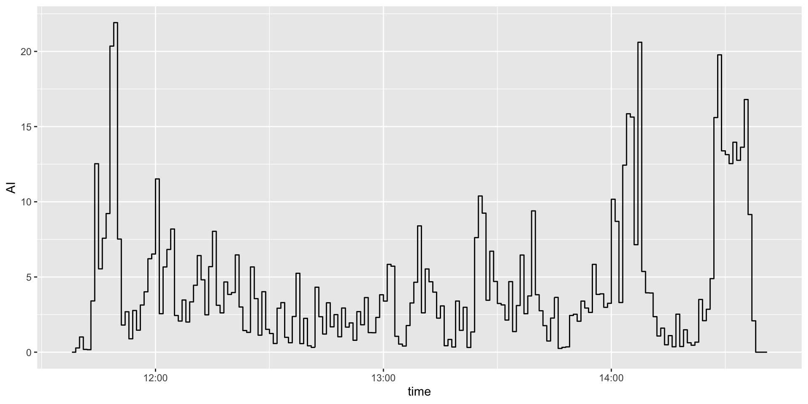
MAD
Vähä-Ypyä et al. (2015) recommended the Mean Amplitude Deviation (MAD): for=r a given epoch of length \(m\) (5sec), and where \(\text{VM}\) represents the vector magnitude of the signal, the calculation of MAD is: \[ \text{MAD} = \frac{1}{m} \sum_{i=1}^{m} \left|\text{VM}_i- \overline{\text{VM}}_m \right| \] They recommended taking the mean value of MAD for summarization and recommended 5-second epochs.
Alternative Metrics: MAD
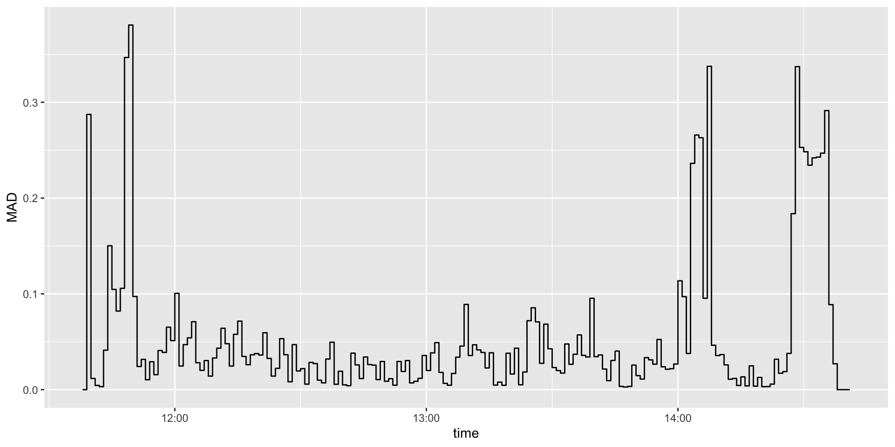
MIMS
Monitor-Independent Movement Summary, an “open-source, universal acceleration summary metric that accounts for discrepancies in raw data among research and consumer devices” John et al. (2019).
- raw data interpolated of the signal to 100Hz
- extrapolates signal for regions that have hit the maximum/minimum acceleration units
- band-pass filters from 0.2 to 5Hz
- absolute value of the area under the curve (AUC) using a trapezoidal rule
- truncates low signal values to \(0\).
MIMS
Karas et al. (2022) found a correlation of \(\geq 0.97\) between AC and MIMS units.
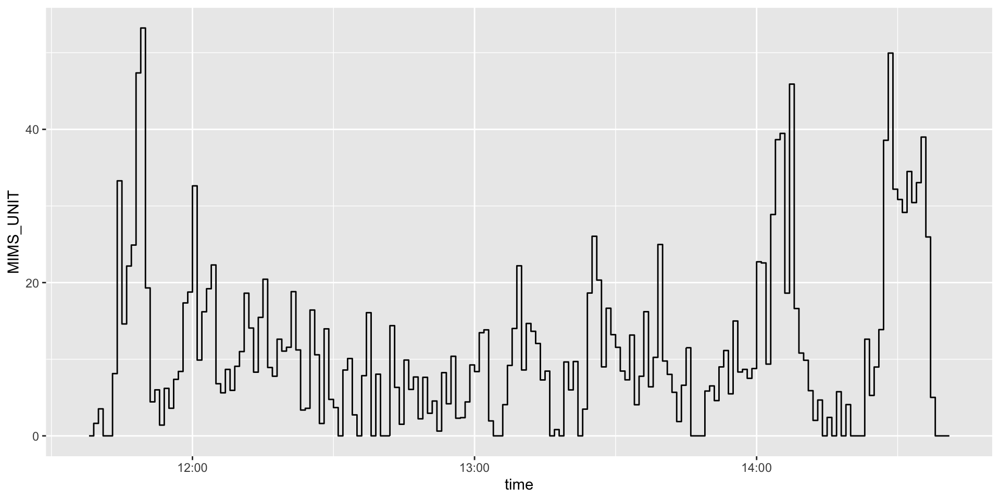
ENMO
- Euclidean Norm Minus One (ENMO)
- At raw level \(\sqrt{X^2+Y^2+Z^2} - 1\), truncate
- Mean values are calculated for different windows
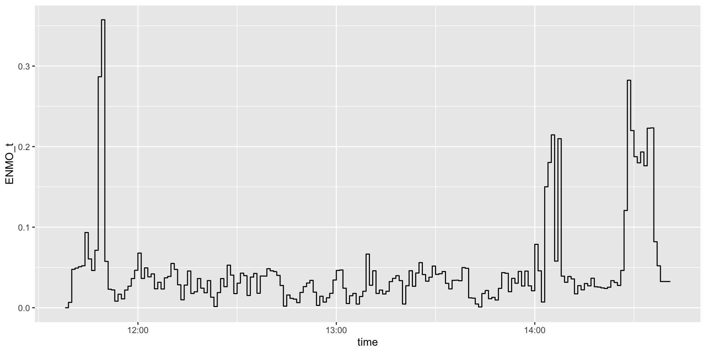
Calculate Them All
- The
acti_calculate_measureswill run AC, AI, MIMS, and MAD
# A tibble: 3 × 11
time AI SD SD_t AI_DEFINED MAD MEDAD mean_r
<dttm> <dbl> <dbl> <dbl> <dbl> <dbl> <dbl> <dbl>
1 2026-04-29 11:38:00.000 0 0 0 0 0 0 0
2 2026-04-29 11:39:00.000 0.281 0.387 0.0342 0.224 0.287 0.172 0.172
3 2026-04-29 11:40:00.000 1.01 0.0356 0.0292 0.124 0.0117 0.00517 1.05
# ℹ 3 more variables: ENMO_t <dbl>, AC <dbl>, MIMS_UNIT <dbl>Other Minute-Level Metrics
MVPA definition
Counts per minute (Montoye et al. 2020):
- < 2860: sedentary,
- 2860-3940: light activity
- \(\geq\) 3941: moderate to vigorous physical activity (MVPA)
MVPA definition
From (Sasaki et al. 2011):
- \(<\) 2690: light
- 2690-6166 moderate
- 6167–9642: vigorous
- \(>\) 9642: very vigorous
MVPA definition
actinet: deep learning (Acquah et al. 2026)
Oxwearables
https://github.com/OxWearables
Self-supervised learner 700,000 accelerometer data from UKBB: (Yuan et al. 2024)
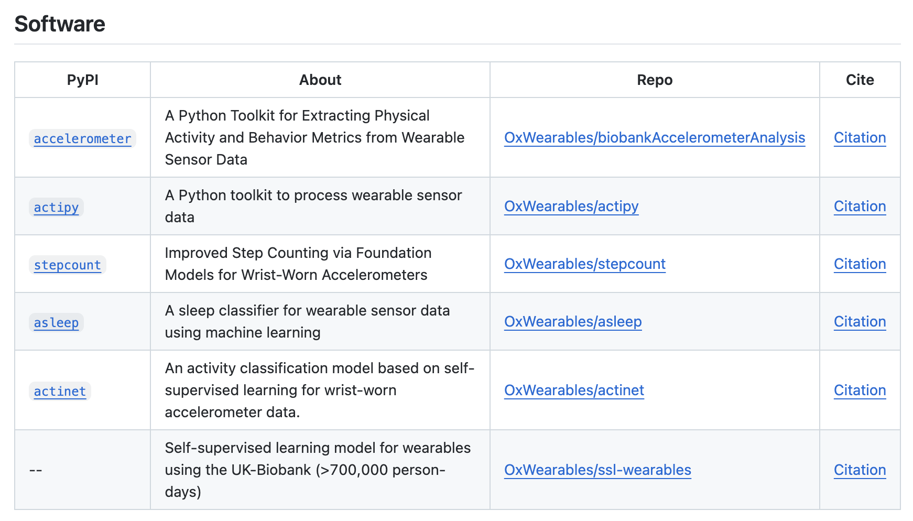
Step Counts using stepcount
SSL model + fine tuning with capture 24 data set.
(Small et al. 2023) python module ported using reticulate.
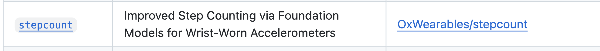
Step Counts
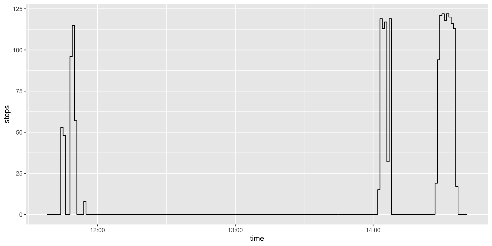
Step Counts
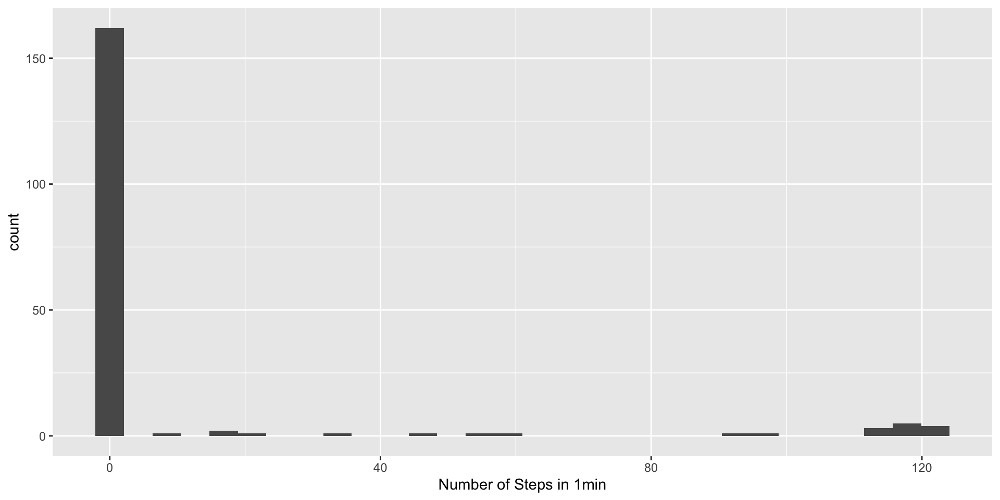
Stepcount works pretty well
Koffman and Muschelli (2024)
stepcount algorithm exhibited the highest F1 score (0.89 ± 0.11) and lowest MAPE (8.6 ± 9%) across all data sets and had the best, or comparable, F1 scores and MAPE in each individual data set.
Stepcount works pretty well
Koffman and Muschelli (2024)

Steps Per Minute
Asleep
asleep - a sleep classifier for wearable sensor data using machine learning (Yuan et al. 2024)
https://github.com/OxWearables/asleep
Asleep Plot
pred = asleep$predictions |>
mutate(time = ymd_hms(time, tz = "GMT"),
date = lubridate::as_date(time),
hourtime = hms::as_hms(time))
data_proc = data_proc |>
mutate(date = lubridate::as_date(time),
hourtime = hms::as_hms(time))
data_proc |>
ggplot(aes(x = hourtime, y = counts)) +
geom_segment(
data = pred,
aes(x = hourtime, xend = hourtime,
y = -Inf, yend = Inf, color = sleep_stage), alpha = 0.25) +
geom_step() +
facet_wrap(~ date, ncol = 1)Asleep Plot
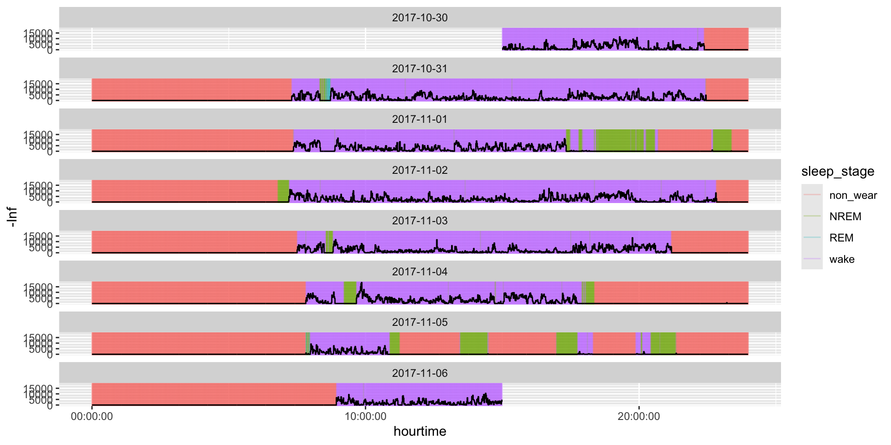
Disclaimer
I haven’t used asleep in publications yet and haven’t delved into those that have
Actinet
(Acquah et al. 2026) - identifies “how much time is spent in sleep, sedentary behaviour, or doing physical activity.”
https://github.com/OxWearables/actinet
Actinet Plot
https://link.springer.com/article/10.1186/s12889-026-27719-0
Actinet Plot
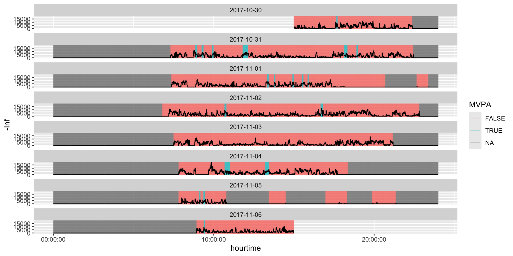
Disclaimer
I haven’t used asleep in publications yet, but have seen people use it.
skdh module
From Pfizer group: https://scikit-digital-health.readthedocs.io/en/latest/
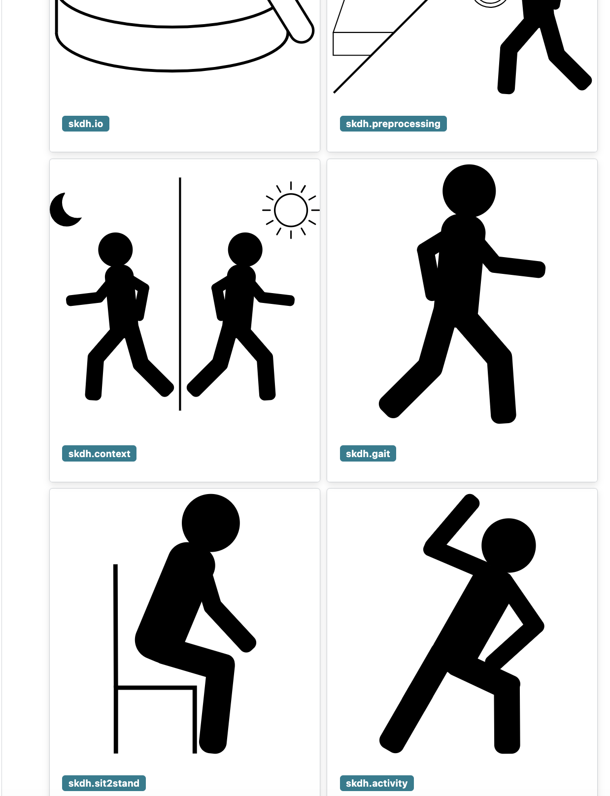
wristpy Module
wristpy - python package for wrist-worn accelerometer data processing from Child Mind Institute
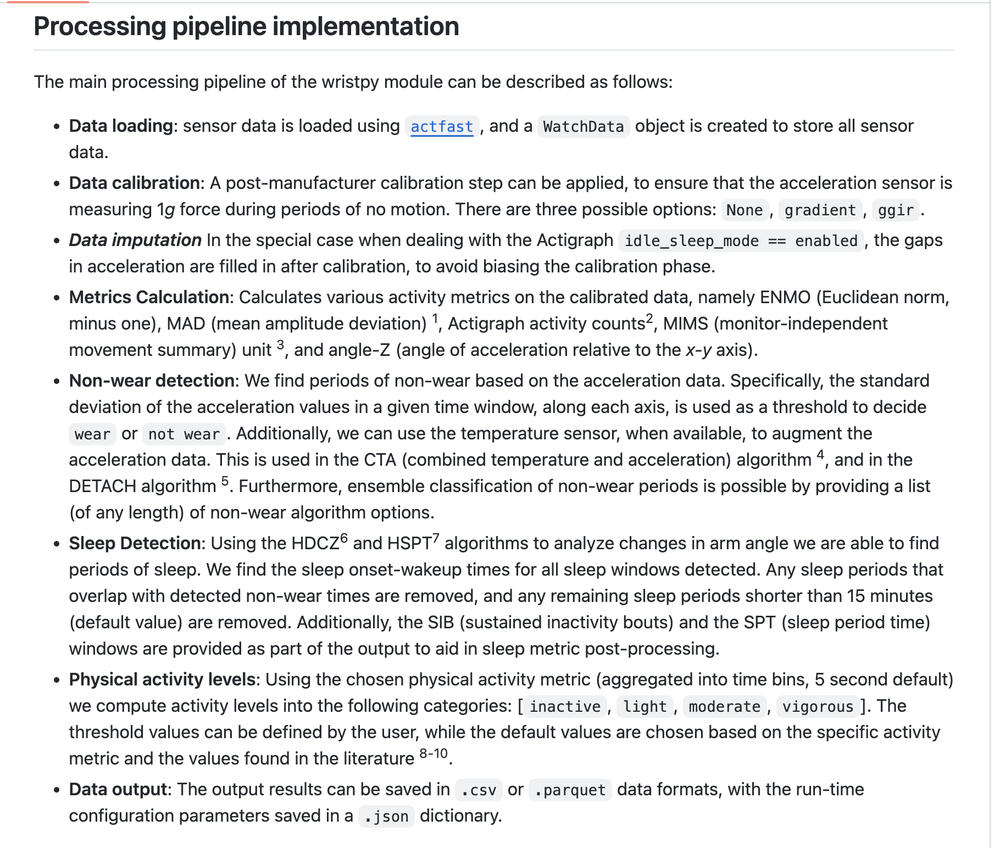
Technical Stuff: Conda/Environments
- Lots of Python modules
- If using Python, you know
conda - If using R, Python link using
reticulatepackage - Multiple
condaenvironments may be needed - package/module A needs numpy <= 2.11 and package B needs numpy > 2.30
- “Switching” conda environments within a script/session is a hassle
Summary
- Many ways to characterize activity
- Many ways to characterize behavior
- Deep learning is moving forward with this
References

Wearable-R: https://github.com/jhuwit/wearabler